AI-Enabled DevOps & SRE Engineer | Platform Engineering Specialist
Naveen Reddy Janagama
AI-Enabled DevOps & SRE | Platform Engineer
15 Years in Cloud & SRE Engineering
I Keep
I Keep
Business-Critical PlatformsReliable & Always On
Senior Site Reliability, DevOps, and Platform Engineer with 15 years across banking, financial services, e-commerce, insurance, and utility domains. Hands-on across AWS and Azure, CI/CD and release management (Octopus Deploy, Jenkins, GitHub Actions), Kubernetes and Docker, Terraform and Chef, and deep observability with Splunk, AppDynamics, Dynatrace, CloudWatch, and Grafana. I own production reliability end to end - controlled releases, incident response, RCA, resiliency testing, and 24x7 support for services that cannot go down.
24x7 Production Reliability & Incident Response
Multi-Cloud Operations across AWS & Azure
Controlled CI/CD Releases & Change Management
Professional Expertise
Cloud Infrastructure & Operations
Operated workloads across AWS (EC2, S3, RDS, Route 53, CloudWatch) and Microsoft Azure (VMs, Azure Monitor). Supported cloud migration and day-to-day cloud operations for business-critical banking and e-commerce platforms.
CI/CD & Release Management
Coordinated planned and ad-hoc production releases using Octopus Deploy, Jenkins, GitHub Actions, ACDC, and ServiceNow change records - with controlled implementation plans, smoke testing, and rollback readiness for minimal business impact.
Containers & Cloud-Native
Deployed and supported containerized workloads with Kubernetes and Docker across AWS and Azure Kubernetes Service, enabling consistent, portable, and scalable cloud-native operations.
DevOps Automation & IaC
Automated infrastructure and configuration using Terraform, Chef, Git, and GitHub, plus PowerShell scripting and runbook automation to eliminate repetitive operational work and reduce configuration drift.
Observability & Monitoring
Built dashboards, alerts, and log-based troubleshooting with Splunk, AppDynamics, Dynatrace, Amazon CloudWatch, Azure Monitor, and Grafana - improving service health visibility, SLA tracking, and time to detect.
SRE, Reliability & ITSM
Owned SLO/SLI/SLA tracking, incident and problem management, RCA and post-incident reviews, SSL certificate management, vulnerability remediation, disaster recovery, and resiliency testing under ITIL practices.
Work Experience Highlights
SRE and DevOps Engineer | Platform Engineer
Jan 2022 - PresentPlatform Engineer, CBA - CommBiz (Australia) | Banking
- Coordinate production releases using Octopus Deploy, ACDC, ServiceNow change records, and controlled implementation plans
- Support AWS migration, cloud operations, and platform reliability for business-critical banking services
- Build and maintain monitoring coverage with Splunk, AppDynamics, dashboards, alerts, and log analysis
- Perform SSL certificate renewals, vulnerability remediation, and Akamai traffic changes under controlled maintenance
- Handle incident triage, smoke testing, resiliency testing, RCA support, and SLA-driven recovery
SRE / Deployment Engineer
Sep 2018 - Aug 2021Senior Product Specialist, Eurofins IT Solutions (USA) | E-commerce
- Managed application hosting and support on IIS and IBM WebSphere
- Handled production deployments using Jenkins, Chef, and Octopus release processes
- Created and supported Azure VMs, cloud services, and MySQL databases
- Authored PowerShell scripts and incident reports for recurring operational tasks
0
Years in DevOps & SRE
0
Enterprise Domains Served
0
Professional Certifications
AWS Certified Solutions Architect
Microsoft Azure Administrator
ITIL V4 Foundation
24x7
Production Reliability Support
01
Reliability First
I treat uptime as a product. Through SLOs, incident discipline, RCA, and resiliency testing, I keep business-critical services stable and recoverable.
02
Observability that Prevents
Using Splunk, AppDynamics, Dynatrace, CloudWatch, and Grafana, I build dashboards and alerts that catch problems early and cut time to detect and resolve.
03
Controlled, Automated Delivery
From IaC with Terraform and Chef to release pipelines in Octopus, Jenkins, and GitHub Actions, I automate delivery with change control and rollback safety built in.
Technologies I Master
AWS
Microsoft Azure
EC2
S3
RDS
Route 53
CloudWatch
Azure Monitor
Kubernetes
Docker
AKS
Terraform
Chef
Git
GitHub
GitHub Actions
Octopus Deploy
Jenkins
ACDC
PowerShell
IIS
IBM WebSphere
Splunk
AppDynamics
Dynatrace
Grafana
SolarWinds
SQL Server
MySQL
Oracle
F5 BIG-IP
Akamai
ServiceNow
BMC Remedy
OTRS
Assyst
SLO / SLI / SLA
RCA
Incident Management
Disaster Recovery
Resiliency Testing
ITIL V4
GitHub Copilot
AI-Assisted Ops
Naveen Reddy Janagama
AI-Enabled DevOps & SRE | Platform Engineer
Responsibilities
Core areas I own across cloud operations, CI/CD and release management, observability, and site reliability
Operate Multi-Cloud Infrastructure
Run and support workloads across AWS (EC2, S3, RDS, Route 53) and Microsoft Azure, including cloud migration and day-to-day cloud operations.
→
Coordinate Production Releases
Plan and execute planned and ad-hoc releases with controlled implementation, smoke testing, and rollback readiness for minimal business impact.
→
Manage Deployments with Octopus & Jenkins
Build, promote, and deploy releases through Octopus Deploy, Jenkins, GitHub Actions, and ACDC across environments.
→
Drive Change Management
Raise and manage ServiceNow change records, coordinate approvals, and implement changes within controlled maintenance windows.
→
Build Observability & Dashboards
Create dashboards, alerts, and log-based troubleshooting with Splunk, AppDynamics, Dynatrace, CloudWatch, Azure Monitor, and Grafana.
→
Lead Incident Response
Handle incident triage, high-priority incidents, and SLA-driven recovery with clear communication and rapid restoration of service.
→
Own SLO / SLI / SLA & RCA
Track reliability objectives, run RCA and post-incident reviews, and drive preventive actions that reduce repeat incidents.
→
Run Resiliency & DR Testing
Perform resiliency testing and disaster recovery validation to keep business-critical services recoverable and highly available.
→
Operate Kubernetes & Containers
Deploy and support containerized workloads with Kubernetes and Docker across AWS and Azure Kubernetes Service.
→
Provision Infrastructure as Code
Automate infrastructure and configuration using Terraform and Chef with reusable, repeatable, version-controlled definitions.
→
Automate with PowerShell
Write PowerShell scripts and runbook automation to eliminate repetitive operational tasks and standardize routine work.
→
Manage SSL & Vulnerability Remediation
Renew SSL certificates, remediate vulnerabilities, and apply security fixes to keep platforms compliant and protected.
→
Support Application & Web Servers
Host and support enterprise applications on IIS and IBM WebSphere, including configuration and environment refreshes.
→

Administer Databases
Support SQL Server, MySQL, and Oracle - handling SQL jobs, backups, and database operations for production applications.
→
Manage Load Balancing & Traffic
Configure and adjust traffic through F5 BIG-IP, Akamai, and Route 53 for availability and controlled routing.
→
Apply AI-Assisted Operations
Use GitHub Copilot, Claude, and AI-assisted troubleshooting to speed up diagnostics, scripting, and operational workflows.
→
Document Runbooks & Knowledge
Create and maintain runbooks, incident reports, and knowledge articles to standardize support and onboarding.
→
Provide 24x7 Production Support
Deliver round-the-clock production support and operational readiness for banking and enterprise platforms under ITIL practices.
→
Naveen Reddy Janagama
AI-Enabled DevOps & SRE | Platform Engineer
Technologies I Work With
A curated collection of tools that shape my cloud, DevOps, and AI engineering work.
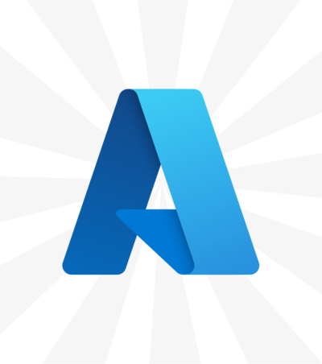
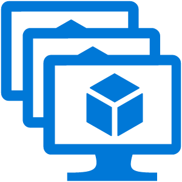
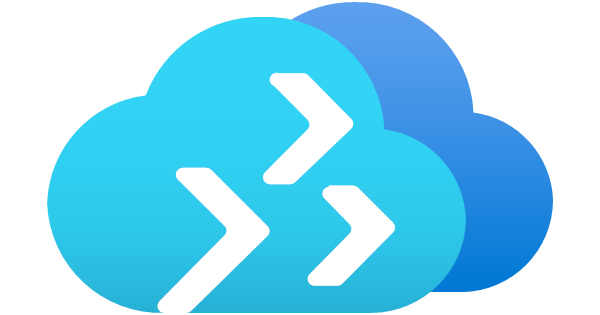

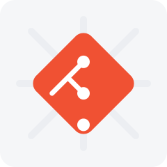

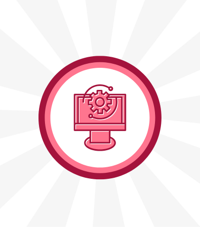
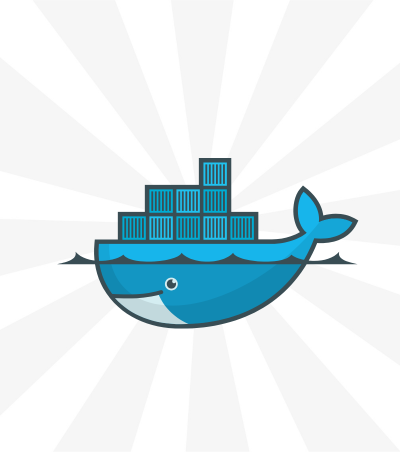
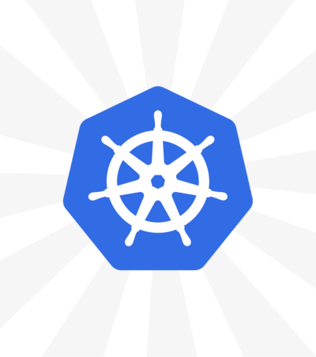
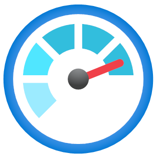
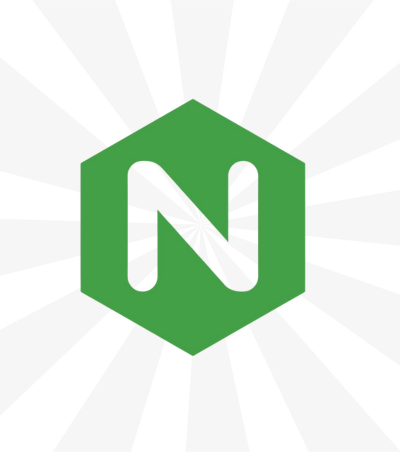

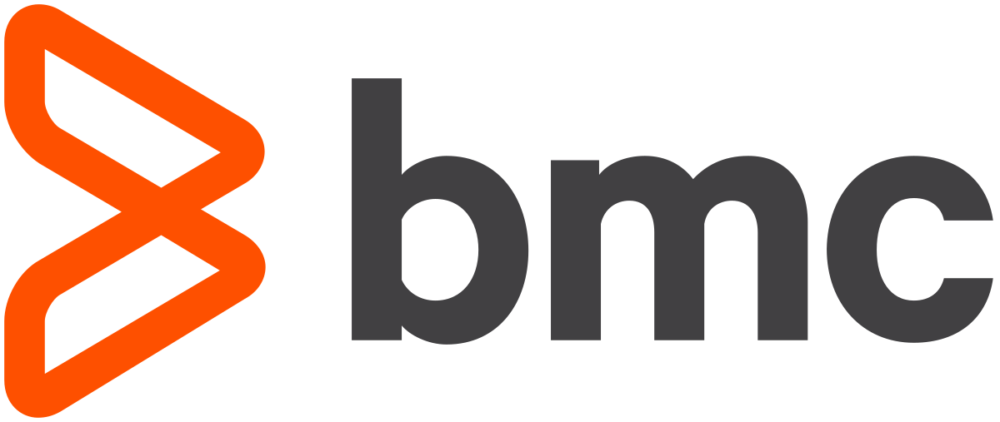
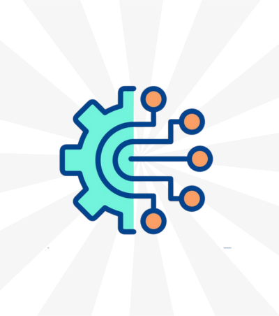
Naveen Reddy Janagama
AI-Enabled DevOps & SRE | Platform Engineer
Work Experience
A journey of architecting reliable, scalable, and intelligent cloud platforms
I lead DevOps, SRE and Platform Engineering initiatives for large-scale AWS platforms, including AWS Landing Zones, EKS microservices and Terraform, CI/CD modernization with AWS DevOps and GitHub Actions, and enterprise observability with Prometheus, Grafana, Splunk, and Dynatrace.
I deployed and supported applications in Azure, monitored millions of card transactions per hour, and analyzed failed and fraudulent records. I created Azure Monitor and Dynatrace alerts and handled high-priority incidents, log analysis, and SQL and database support.
I managed application hosting on IIS and IBM WebSphere, ran production deployments with Jenkins, Chef, and Octopus, supported Azure VMs, cloud services, and MySQL databases, and authored PowerShell scripts and incident reports for the EOL and OSO e-commerce platforms.
I supported the Hosted Accutrac ordering platform and the GroupTrak (GTx) fulfillment product - handling application operations, deployments, and production support across Iron Mountain hosted services.
Academic foundation that launched my career in infrastructure, cloud operations, DevOps, and site reliability engineering.
Naveen Reddy Janagama
AI-Enabled DevOps & SRE | Platform Engineer
About Me
Keeping Business-Critical Platforms Reliable and Always On
I am Naveen Reddy Janagama, a Senior Site Reliability, DevOps, and Platform Engineer with 15 years of experience across banking, financial services, e-commerce, insurance, information storage, and utility management domains.
My core strengths span cloud infrastructure on AWS and Microsoft Azure, CI/CD and release management with Octopus Deploy, Jenkins, and GitHub Actions, containers with Kubernetes and Docker, Infrastructure as Code with Terraform and Chef, and deep observability using Splunk, AppDynamics, Dynatrace, CloudWatch, and Grafana.
I work in an automation-first, SRE-driven, and ITIL-aligned way - owning SLOs, incident and change management, RCA, SSL and vulnerability remediation, disaster recovery, and resiliency testing to reduce repeat incidents and keep production stable under 24x7 support.
I am a certified AWS Solutions Architect, Microsoft Azure Administrator, and ITIL V4 Foundation professional, and hold a Bachelor of Technology from JNTU, Hyderabad.
Naveen Reddy Janagama
AI-Enabled DevOps & SRE | Platform Engineer
Get in Touch
Let's talk site reliability, cloud operations, CI/CD, and observability. I'm open to SRE, DevOps, and platform engineering roles, as well as production support and reliability engagements.
Send a Message
I typically respond within 24 hours
Get in Touch
Multiple ways to connect
Location
Hyderabad, Telangana
India | Remote Available
Response Time: 24-48 hours
I value every inquiry and aim to provide thoughtful responses tailored to your needs.
Naveen Reddy Janagama
AI-Enabled DevOps & SRE | Platform Engineer
Projects
Enterprise platforms I have engineered, deployed, and kept reliable across banking, financial services, and e-commerce
CommBiz Online Banking Platform
2022 - PresentCommonwealth Bank of Australia · Banking · Role: Site Reliability / DevOps & Deployment Engineer
A secure online banking platform enabling Australian businesses to manage payments, global trade, investments, account balances, and transaction history across web, iOS, and Android - built for multi-user, business-grade financial operations.
- Owned production releases end to end using Octopus Deploy, ACDC, and ServiceNow change records with controlled implementation and rollback plans.
- Drove AWS migration and cloud operations while safeguarding application stability for business-critical banking services.
- Built observability with Splunk and AppDynamics - dashboards, alerts, and log analysis to cut time to detect and resolve.
- Led SSL certificate renewals, vulnerability remediation, Akamai traffic changes, and controlled production maintenance windows.
- Ran incident triage, smoke and resiliency testing, RCA support, and SLA-driven recovery for 24x7 operations.
Express SRO - Payments Monitoring
2021FIS Global · Financial Services · Role: Service Delivery Analyst / SRE / Deployment Engineer
A high-throughput transaction monitoring platform processing millions of ATM, POS, and online payment-gateway records per hour worldwide - surfacing failed and fraudulent transactions for rapid analysis.
- Deployed and supported applications across Azure Cloud environments for global payment processing.
- Monitored live payment transactions and analyzed failed and fraud-related records across multiple channels.
- Engineered proactive monitoring alerts using Azure Monitor and Dynatrace to protect service health.
- Handled high-priority incidents, deep log analysis, SQL jobs, and database support under strict SLAs.
EOL - Eurofins Online
2018 - 2021Eurofins IT Solutions · E-commerce · Role: Senior Product Specialist / SRE & Deployment Engineer
A customer-facing web application used by Eurofins laboratories to capture sample details, process test orders, and deliver results - the primary online interface between customers and lab operations.
- Managed application hosting and support on IIS and IBM WebSphere for reliable customer access.
- Delivered production deployments using Jenkins, Chef, and Octopus with standardized release processes.
- Provisioned and supported Azure VMs, cloud services, and MySQL databases powering the platform.
- Authored PowerShell automation and incident reports to eliminate recurring operational toil.
OSO - Off-Site Operations
2018 - 2021Eurofins IT Solutions · E-commerce · Role: Site Reliability / Deployment Engineer
An operations platform supporting the physical locations where technicians perform sample collection - keeping regional applications, scheduled jobs, and data flows running reliably.
- Created and supported Azure VMs, cloud services, and MySQL databases for regional operations.
- Monitored task-scheduler jobs, server logs, and weekly audit checklists to catch issues early.
- Managed Octopus build creation, deployments, and configuration changes across environments.
- Hosted and configured new regional applications in IIS to support business expansion.
Hosted Accutrac
2016 - 2018Iron Mountain · Information Storage · Role: System Engineer - Application Management
A hosted platform enabling customers to place orders for items stored in Iron Mountain data centers, with full reporting and tracking of ordered-item details.
- Supported the ordering platform and its reporting and tracking capabilities across hosted services.
- Handled application operations, deployments, and production support to maintain availability.
- Coordinated troubleshooting and service restoration for a business-critical customer-facing system.
GroupTrak (GTx)
2016 - 2018Iron Mountain Fulfillment Services (IMFS) · Role: System Engineer - Application Management
A marketing inventory fulfillment product with a web interface (GTx) sitting on top of the GTi back-end fulfillment system - managing inventory and fulfillment workflows for enterprise clients.
- Supported the GTx web interface and its integration with the GTi back-end fulfillment engine.
- Managed deployments and configuration for a multi-tier fulfillment application.
- Delivered ongoing application operations and production support across the fulfillment stack.